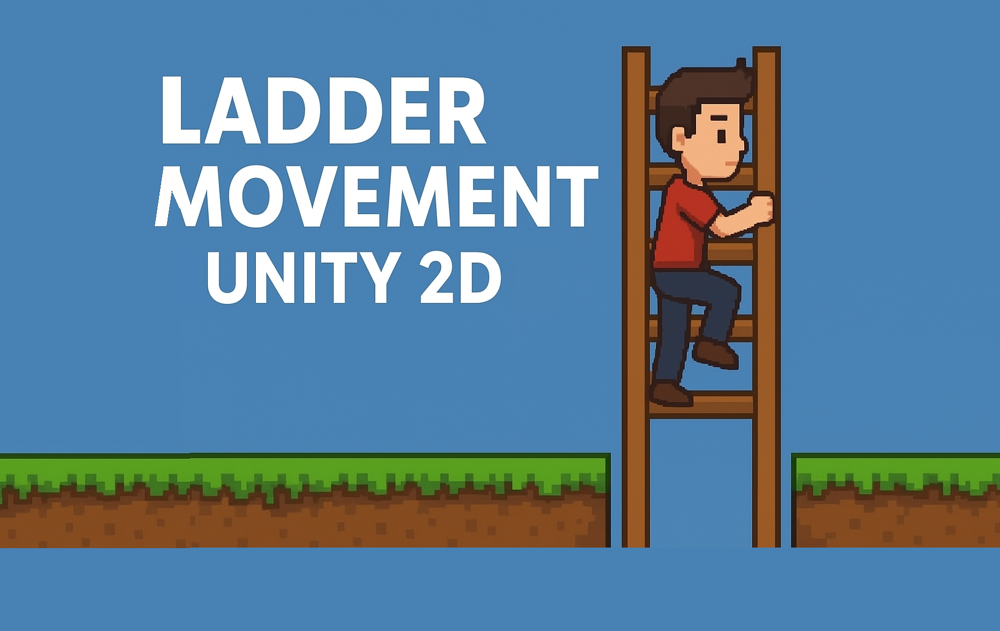
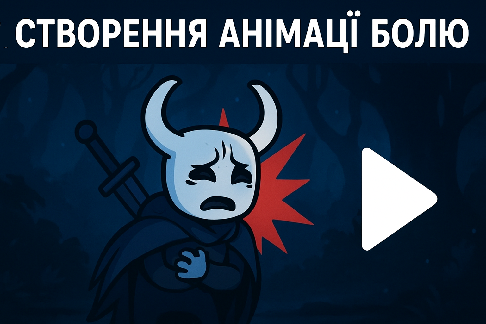
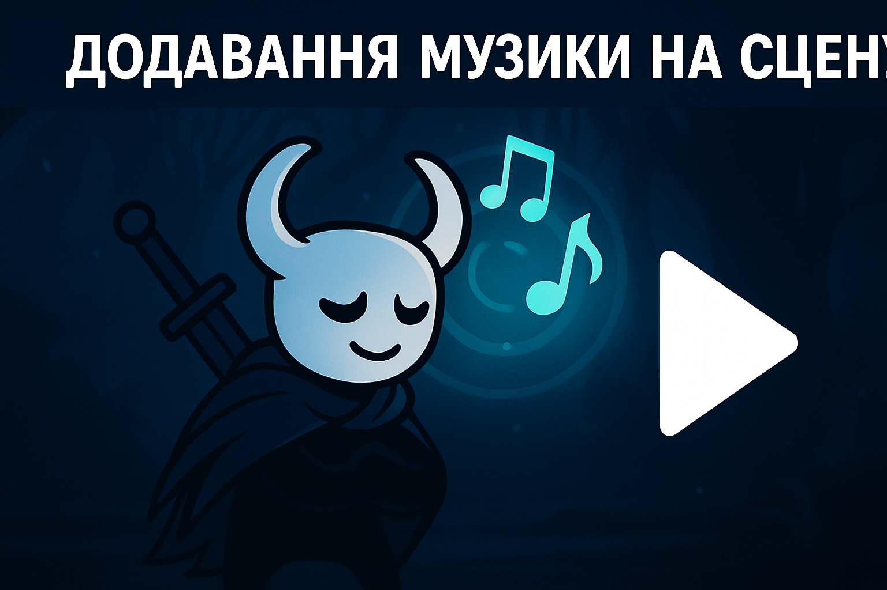
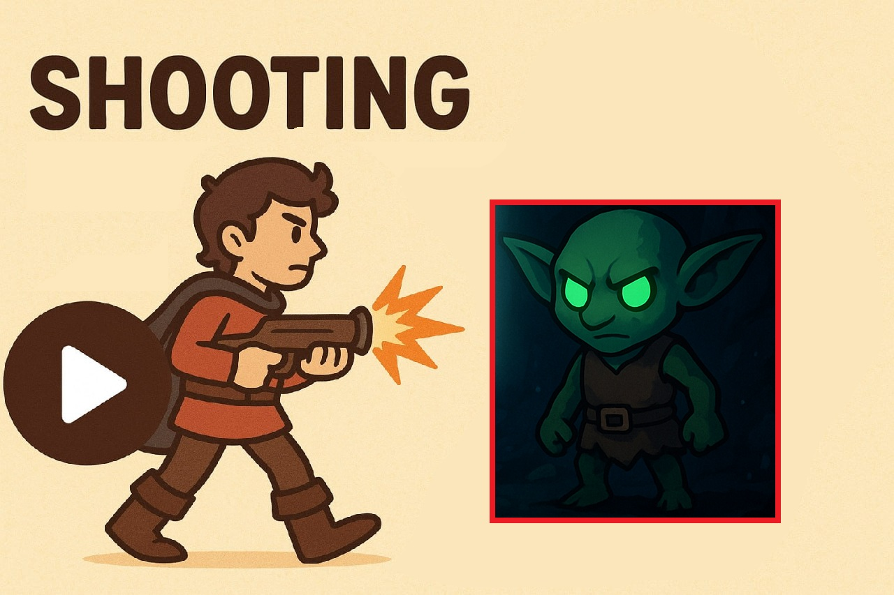
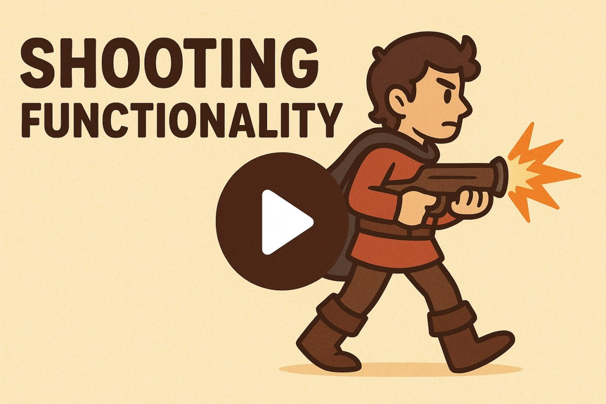
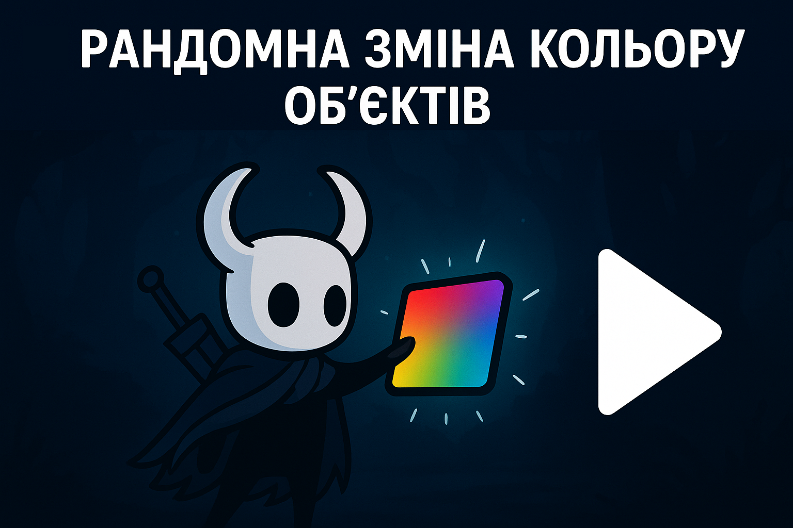
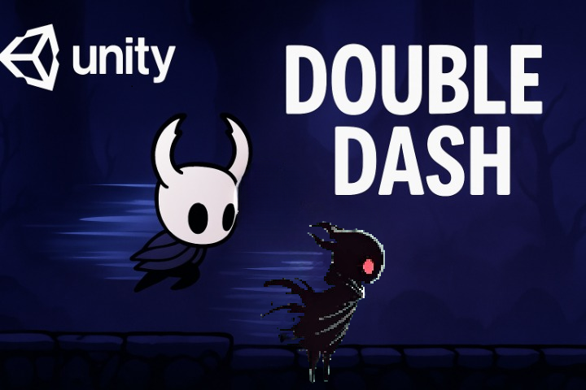
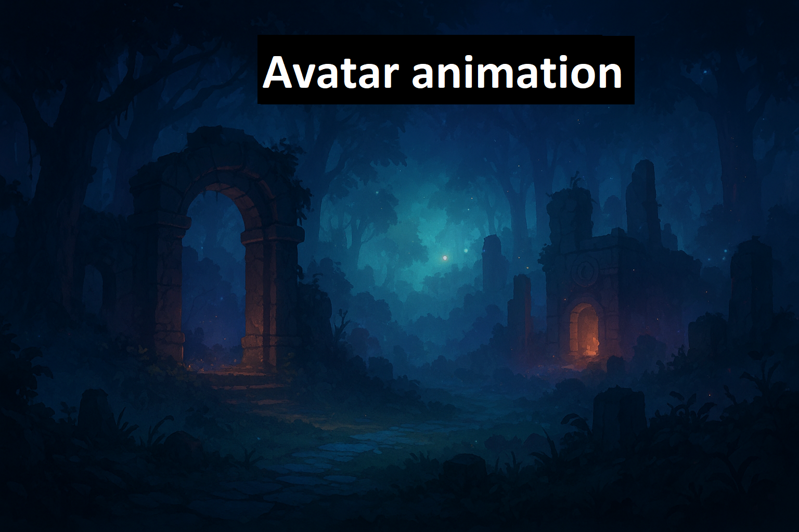

Цей модуль надасть знання для створення взаємодії з об'єктами в грі:
У цьому відеоуроці ми навчимося створювати механіку збирання монет та різних предметів у грі.

🎮 Ми навчимось додавати функціонал переміщення по драбині до персонажа з базовим рухом
Спрайти — це зображення для 2D графіки. Ви навчитесь імпортувати їх, розміщувати в сцені та створювати анімації.
У цьому уроці ти навчишся додавати звукові ефекти до рухів персонажа в Unity 2D. Ми розберемо, як програвати звук під час ходьби та стрибка, щоб зробити гру ще більш живою та атмосферною! 🔊 Додай реалізму в гру за допомогою звуку!
Ми навчимось як знищувати ворожих NPC.
Ми навчимось як додавати гравітацію, зіткнення і керувати рухом об’єктів.
Ми навчимось як додавати ефект зміни кольору при дотику з обєктом.
Ми навчимось як додавати ефект зміни кольору при дотику з обєктом.
У цьому відео ви навчитеся робити так, щоб аватар реагував на отриману шкоду — відтворював анімацію болю, змінював стан або втрачав здоров’я в Unity.
